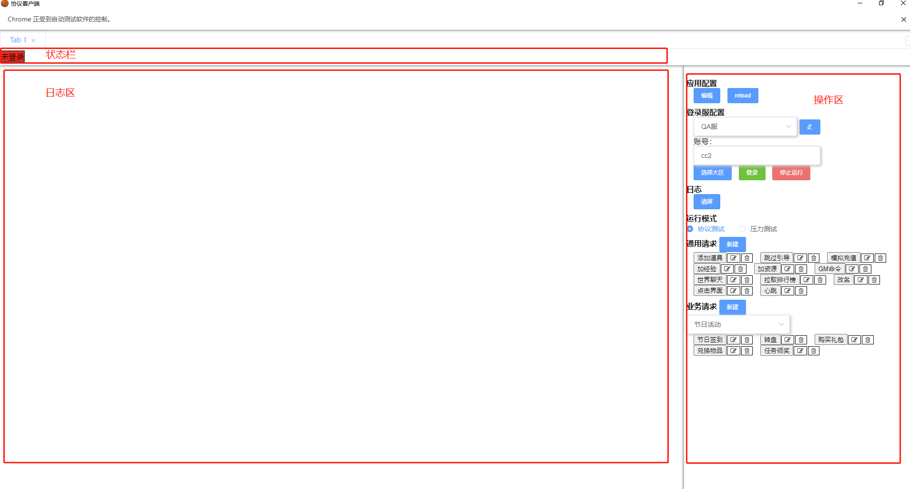
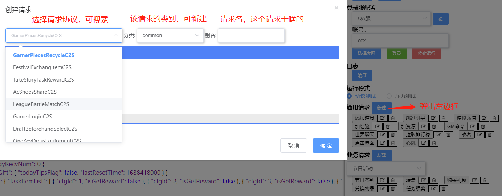
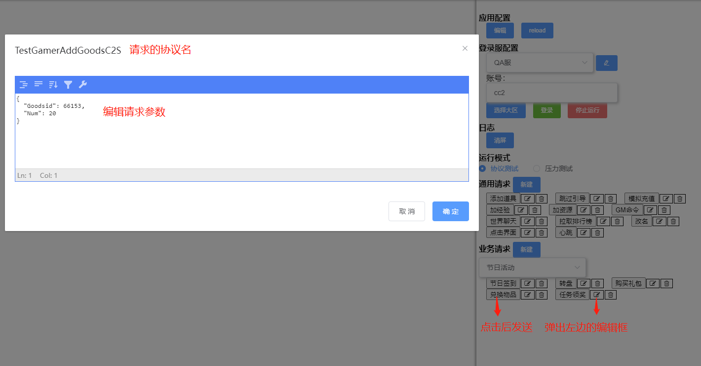
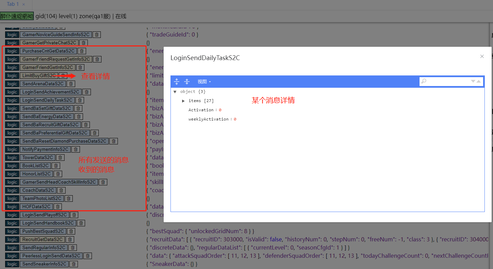
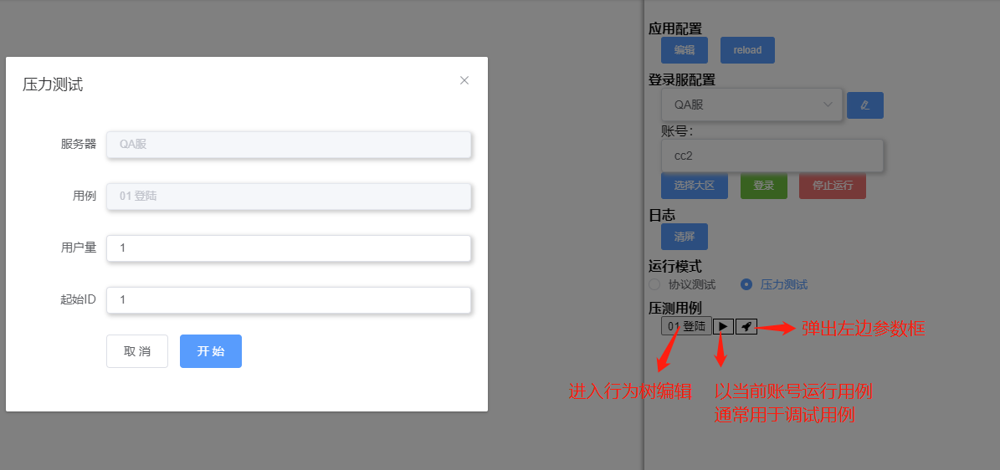
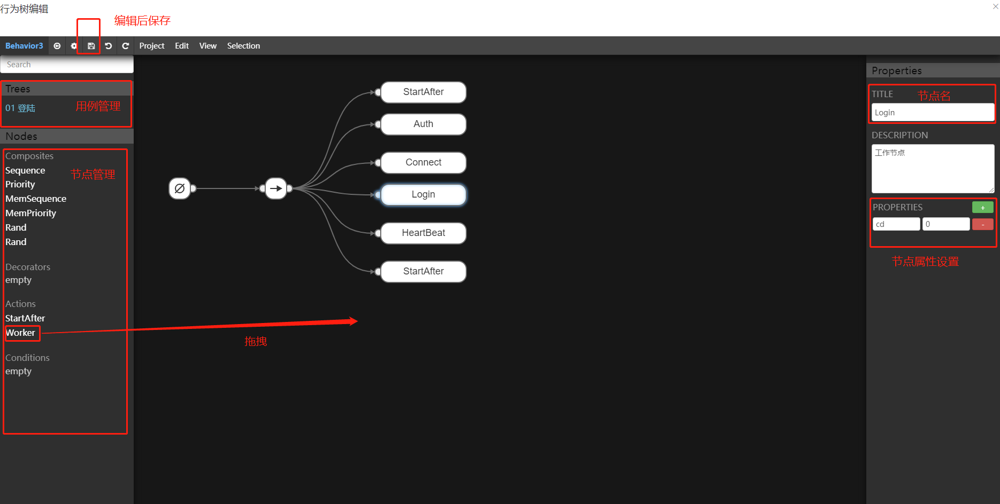
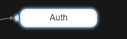
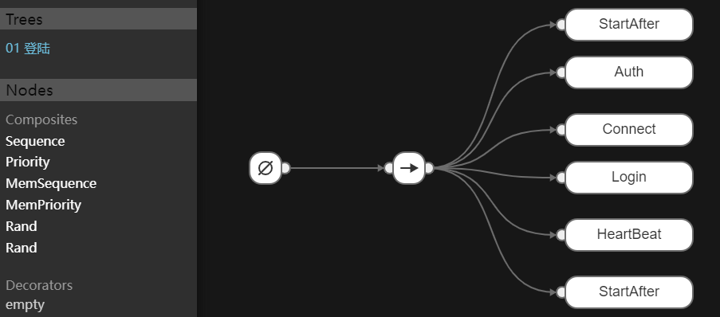
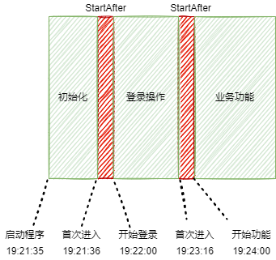

使用行为树进行控制
流程控制代码主要由行为树负责，只需编写业务逻辑部分代码
叶子节点以及整颗树均可复用
展示压测状态
功能模块测试
日常功能测试，方便定位问题
多开






应用总体包含框架层、网络层、业务层三部分
项目组接入需要实现自己的网络层和业务逻辑层
然后继承框架层的结构体即可跑起来
运行时包含最重要的两种循环
应用主循环
监听信号，控制启停
玩家循环
在独立的协程中
封装网络操作，使得业务层无需关注与服务器的通信细节
项目组需实现以下三个部分
实现编解码、加解密等操作
提供给业务层使用的回调
pb协议预处理
预处理pb有两个用途
x
// 预处理协信息func InitPbInfo() { NbaPbInfo.Once.Do(func() { NbaPbInfo.Init() protoregistry.GlobalFiles.RangeFiles(func(fileDescriptor protoreflect.FileDescriptor) bool { for i := 0; i < fileDescriptor.Messages().Len(); i++ { // 遍历pb Message desc := fileDescriptor.Messages().Get(i) name := string(desc.Name()) if strings.HasSuffix(name, "C2S") || strings.HasSuffix(name, "S2C") { // 根据项目规范 拿到指定的消息 tp := proto.MessageType(name) if tp.Kind() == reflect.Ptr { tp = tp.Elem() } NbaPbInfo.ProcessOneMsg(name, tp) } }
return true }) })}首先需实现框架层IGamer接口
xtype IGamer interface { GetUid() string // 玩家唯一标识，登录前就要确定 Close() // 关闭玩家 OnExit() // 玩家退出回调
MsgChan() <-chan interface{} // 获取消息channel ExitChan() <-chan struct{} // 获取exit channel ProcessMsg(interface{}) // 消息处理回调
GetTickMs() int64 // 每x秒跑一颗树，默认5000毫秒 IsStopped() bool Stop()}框架中包含默认的实现Gamer结构体，可继承之
xxxxxxxxxxtype Gamer struct { MsgCh chan interface{} ExitCh chan struct{} UI *front.UI Silent bool // stop后不再发送消息，但继续收消息 // 提升时延统计的精度 避免有的消息刚发出 没收到回包就停了 Stopped bool}然后就是自己的业务逻辑处理部分了
适配网络层
xxxxxxxxxxfunc (g *Gamer) OnConnected() {}
func (g *Gamer) OnDisconnected() {}
// 收到网络层包 转发到玩家协程处理func (g *Gamer) OnRecvPacket(msg *network.Message) { g.MsgCh <- msg}
// 发包func (g *Gamer) SendMsg(msg proto.Message) bool { return false}
// 独立的玩家协程中处理网络消息func (g *Gamer) ProcessMsg(data interface{}) { }
行为树节点实现
框架会把结构体Action后缀的方法作为行为树叶子节点
如图中的Auth节点，其对应的实现为AuthAction

xxxxxxxxxx// node 包含节点的配置信息// tick store字段可存储业务相关的数据， userdata字段已被框架使用 不可修改func (g *Gamer) AuthAction(node *gobot.Worker, tick *btree.Tick) btree.Status { }消息响应实现
即收到服务器的时的业务逻辑处理
每个项目组可能有不同的实现，nba这边目前是通过反射自动注册响应函数
比如GamerLoginS2C方法即对应收到服务器登录回包GamerLoginS2C时对应的处理函数
xxxxxxxxxx// val 收到的消息func (g *Gamer) GamerLoginS2C(val interface{}) { sc := val.(*pb.GamerLoginS2C) g.Gid = int64(sc.GetId())}实现完网络层和业务逻辑层后
需要一个结构将业务层的gamer调度起来
创建自己的结构体，内嵌框架中的App结构体
然后主要重写以下两个方法 其他方法按需重写即可
xxxxxxxxxxtype IApp interface { // 根据配置文件创建一个玩家 CreateGamer(confJson string, seq int32) (back.IGamer, error) // 压测开始 StressStart(start, count int32, treeID, confJs string) }框架默认将Js前缀的方法提供给UI层js调用
目前已有的方法都在jsapi.go中
项目组可根据时间情况重写、新增方法
命令行参数解析、配置读取等操作参考demo中main函数自行实现即可
响应指标包括玩家、全局两个维度
玩家数据
先以玩家为单位计算玩家消息响应指标
由业务层实现处理逻辑
全局数据
最终输出由汇总后的全局数据为准
框架层提供默认实现，业务层可重写
业务层首先需要定义指标并实现指标处理接口
xxxxxxxxxxtype IMetricHandler interface { ProcessMetric(metric IMetric, rec *Recorder) // 处理指标 在独立的协程中处理指标 TransMsgId(interface{}) string // 将msgId转为可读的名字 GetReportFile() string // 输出报告的文件名}然后在消息收发时调用记录指标函数
xxxxxxxxxxfunc Record(metric IMetric) {}调用前可过滤掉无关紧要的消息，例如心跳
以及压测全服聊天时的广播消息，避免负载过高
登陆创号和业务功能的压测数据需要区分出来
如果不注意可能造成把登录的压力算入业务功能中
比如一部分机器人在登录时，另一部分机器人就开始跑业务功能了
通过内置的StartAfter节点隔离压测逻辑块
StartAfter节点可填参数，参数大于0表示等待x分钟后才能运行后续节点
例如第一次运行到该节点时间是19:21:36 而x等于1时，代表19:22:00才可开始运行后续节点，即25秒后

在上边的登录树前后加入StartAfter节点，相当于实现了如下效果

按上面的逻辑，如果开了1000个机器人，
那么这些机器人将在同一秒发起登录 可能直接把服务器搞崩
所以需要限制每秒登录的次数
框架层实现了一个令牌桶限流器
使用需要在启动时注册限流配置
xxxxxxxxxx// 参数conf 代表每个消息tps上限// 例如GamerLoginC2S:100 表示每秒最多可发100个登录包func SetLimit(conf map[string]int32) 然后在逻辑层调用网络发包前判断限流情况
xxxxxxxxxxfunc (g *Gamer) SendMsg(msg proto.Message) bool { if g.conn == nil { return false }
tp := reflect.TypeOf(msg).Elem() // 先判断下是否限流 if !ratelimit.Consume(tp.Name()) { return false } // 再调用网络层接口发包 return g.conn.Send(msg)}提供一些脚本demo，方便使用
xxxxxxxxxxscript/|-- build.py # 编译|-- fileutil.py|-- log.py # 日志清理|-- pb.py # copy项目的pb文件|-- release.py # 打包 包含传包到压测机功能